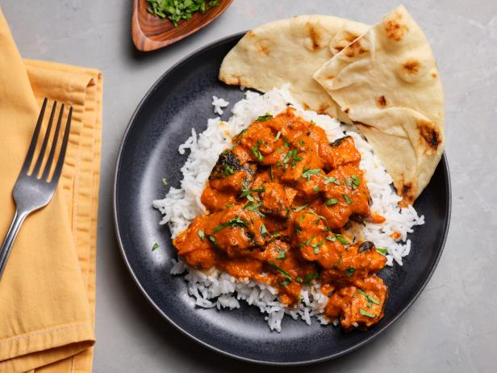

Chicken Tikka Masala

Description
Chicken tikka masala is a dish that was popularized in Great Britain by Indian cooks. It is a dish containing roasted marinated chicken chunks in spiced sauce
This dish is packed with flavor, and is commonly found at many indian restaurants. You can make this delicious dish at home by following these steps!
Ingredients
Source of Recipe
- Chicken Marinade
- Boneless Chicken Breast
- 1/2 Cup Plain Yogurt
- 2 tablespoon lemon juice
- 6 cloves garlic,minced
- 1 tablespoon minced garlic
- 2 teaspoon salt
- 2 teaspoons garam masala
- 2 teaspoons paprika
- For Sauce
- 3 tablespoon oil
- 1 finely chopped onion
- 2 tablespoons minced ginger
- 2 teaspoons ground cumin
- 8 cloves minced garlic
- 2 teaspoons ground tumeric
- 2 teaspoons paprika
- 2 teaspoons chili powder
- 2 teaspoons garam masala
- 1 teaspoon tomato puree
- 3 1/2 cups tomato sauce
- 1 1/4 cups water
- 1 cup heavy cream
- 1/4 cup fresh cilantro
- Serve with Rice or Naan Bread
Steps
- Slice chicken into small chunks
- Combine chicken with yogurt,lemon juice, garlic, ginger, salt, cumin, garam masala, and paprika, and stir until coated well
- Refrigerate overnight
- Preheat oven to 500°F and line baking pan with parchment paper
- Place marinated chicken on skewers, then set them over the baking pan, ensuring there is space beneath the chicken. Bake for around 15 minutes
- Heat oil in a large pot over medium heat, sautee the onions, ginger, and garlic until tender. Then add the cumin, tumeric, coriander, paprika, chili powder, and
garam masala and stir constantly for about 30 seconds.
- Stir in the tomato puree, tomato sauce, and the water, then bring to a boil and cook for 5 minutes. Pour in the cream
- Remove chicken from skewers and add to the sauce, then cook for about 1-2 more minutes. Garnish with cilantro and you are done!
Return to the main page